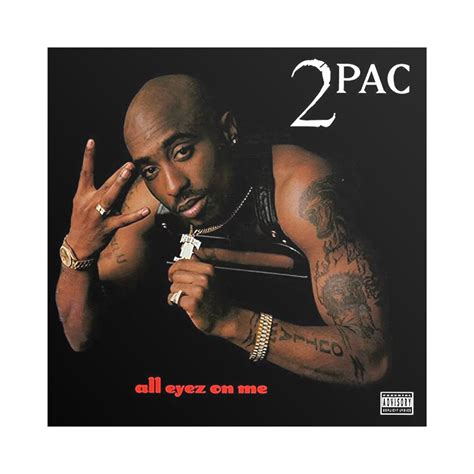

Tupac Shakur:
All Eyez On Me
Home
Culture
Modernism
Quiz!
How well do you know Tupac?
Answer the questions below to find out!
Where was Tupac born?
New York
Brooklyn
East Harlem
Bronx
What year was "All Eyez On Me" released?
1996
1997
1994
1999
What Tupac song is most known for upholding women's rights?
California Love
Keep Ya Head Up
Dear Mama
Ghetto Gospel
What Tupac style directly reflects metamodernism?
Self reflection and awareness, especially when discussing culture and women's rights
Finding meaning in life despite the chaos it presents
Fragmenting his own life into different roles: a poet, lover, thug, and outlaw
Using irony to drive home a point, as seen literally in the title "All Eyez On Me"
Before Tupac became famous, what alias did he use during performances?
MC Bronx
Shakur
Big U, Little U
MC New York
Submit!